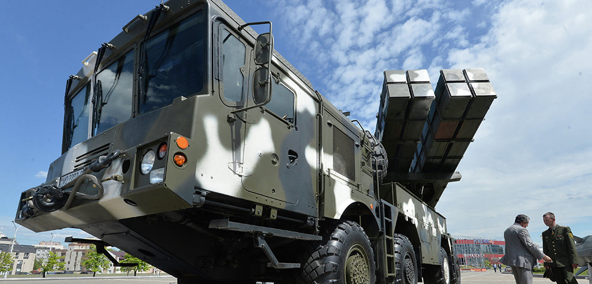
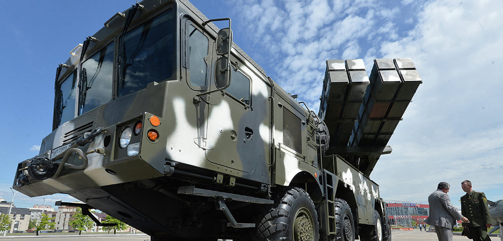

РСЗО КНР в наше время
WS-2
WS-2 (кит. трад. 衛士二號(丁), упр. 卫士二号(丁), пиньинь Wèishì èr hào (dīng), палл. Вэйши эр хао (дин), буквально «Страж-2») — китайская реактивная система залпового огня калибра 400 мм (425 мм — WS-2D). Разработана китайской госкорпорацией Sichuan Aerospace Industry Corporation (SCAIC). Базируется на шасси четырёхосного грузового автомобиля Taian ТАС-5450.
WS-3
WS-3 (кит. трад. 衛士三號, упр. 卫士三号, пиньинь Wèishì sān hào, палл. Вэйши сан хао, буквально «Страж-3») — китайская реактивная система залпового огня калибра 400 мм. Разработана китайской госкорпорацией Sichuan Aerospace Industry Corporation (SCAIC) штаб квартира которой, расположена в Чэнду провинции Сычуань. Круговое вероятное отклонение ракет существенно уменьшено по сравнению с WS-2. Ракета может оснащаться различными боевыми частями массой до 200 кг, включая фугасную, кассетную с 540 боевыми элементами малого калибра, объемного взрыва.
 
